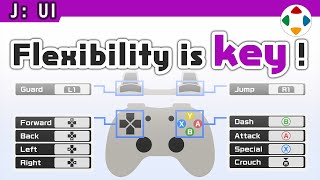
速览
樱井认为，再简单的作品也必须能做按键设置（键位配置）。键位画面规格其实很重，每个制作者各自做太费工；若主机功能能按游戏定制就好了，但现实很少如此。他的游戏从 Wii 起要支持好几种手柄，又是很多人聚在一起玩，需要让客人也能轻松设置。注意点：①图形化表现手柄——很多游戏把项目纵列，做起来简单，但玩家得一边看手柄一边对照，很累；②用光标指定要改的按钮，进入后再按要分配的功能；不采用「直接按要换的键」的方式，因为键位画面本身也是菜单，需要退出操作——按了退出键却开始改那个键就麻烦了；③允许操作重复，如《大乱斗》有两个跳跃键，另一个也能换成喜欢的功能；④按键设置记录在名字里，对战时选名字即可套用，客人多也能应对；可能的话还能存进手柄带去别人家。另外，日本从 PS5 起 ×确认、○取消，海外原本就是如此；PS4 可切换，PC 与 Xbox 位置一致，结果只有 Switch 相反。Switch 系统层可换键，但会影响所有软件，如果游戏内没有按键设置就毫无办法。做按键设置真的很麻烦，但有玩家需要它，应尽可能支持。
1. 再简单也要能改键 0:03
再简单的作品，也一定要能做按键设置（键位配置）。
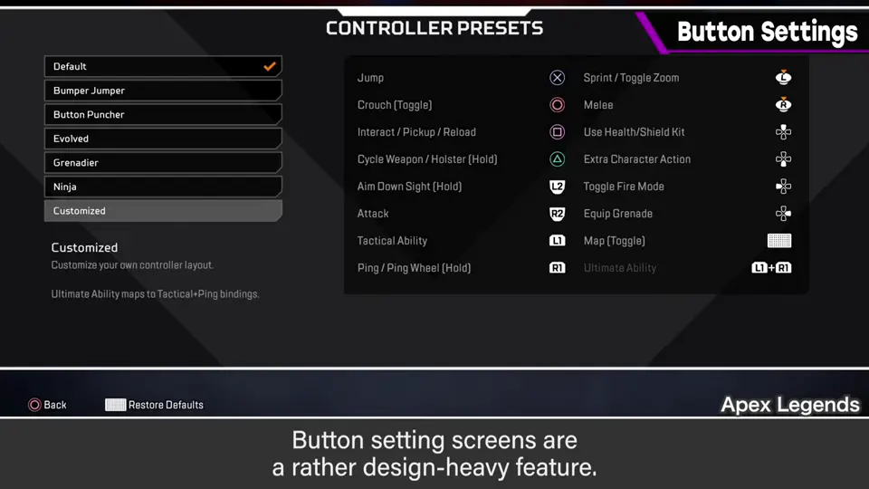
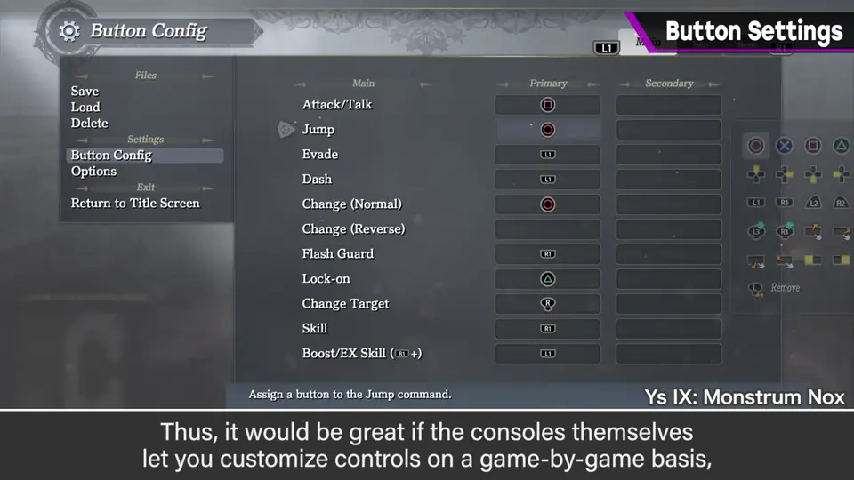
键位画面规格其实很重，每个制作者各自做太费工。如果主机功能能按游戏定制就好了，可惜很少如此。
2. 《大乱斗》的特殊要求 0:33
樱井的游戏从 Wii 起要支持好几种手柄，而且是很多人聚在一起玩，所以客人的设置也要轻松。
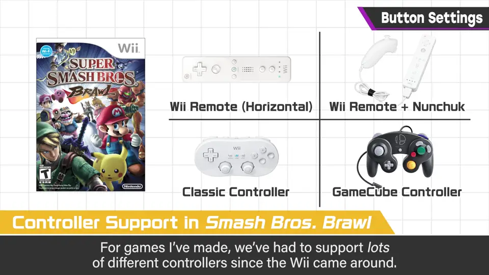
3. 注意点①：图形化手柄 0:52
手柄用图形表现。很多游戏把项目竖着列出来，那样做起来简单，但玩家必须一边仔细确认手柄一边设置，很辛苦。
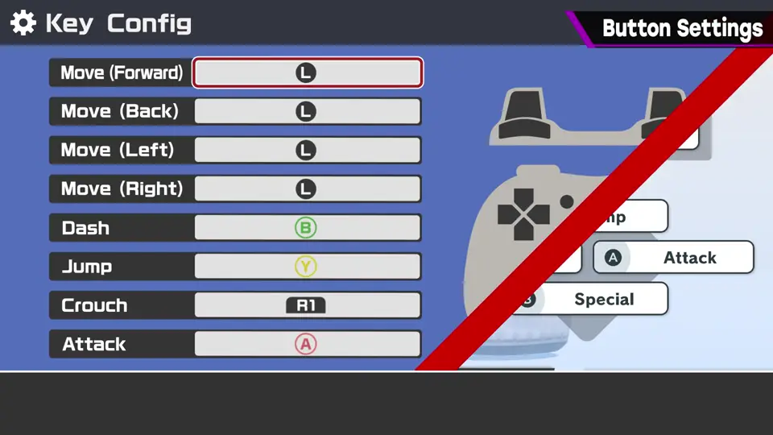
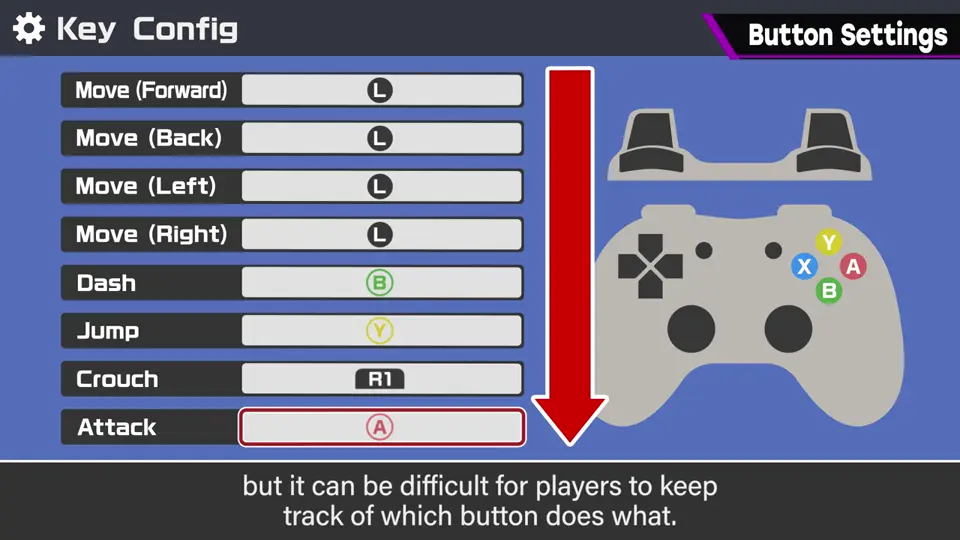
4. 注意点②：先选按钮再分配 1:10
用光标指定要更改的按钮，进入后再选择分配给它的动作。
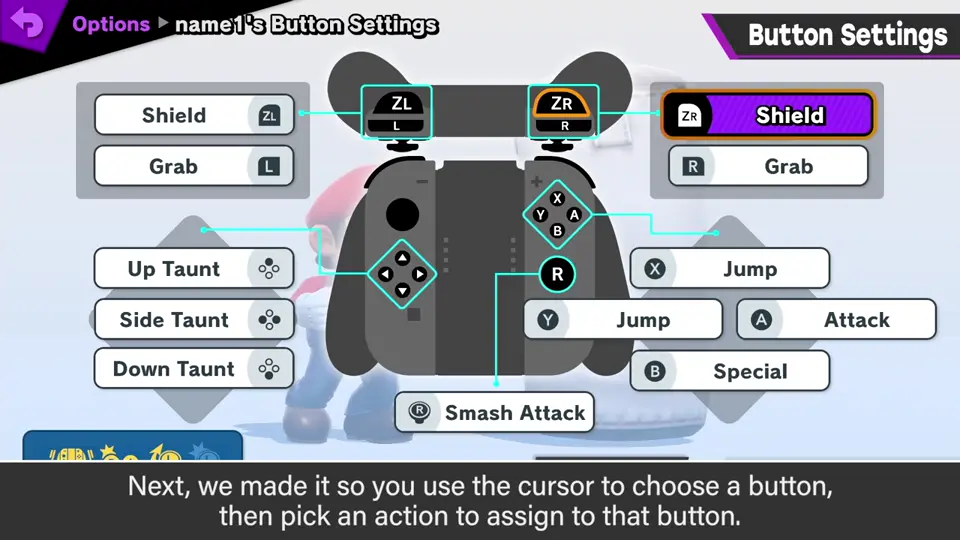
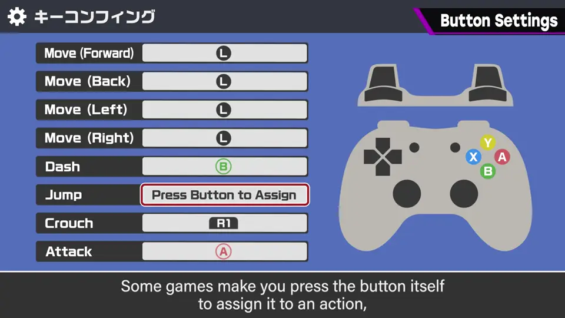
也有「先按要换的键，再按要交换的键」的方式，但他没有采用：键位画面也是菜单，必须能退出；按了退出键却开始改那个键，就出问题了。
5. 注意点③④：允许重复、绑定名字 1:29
- 允许操作重复：例如《大乱斗》有两个跳跃键，另一个也可以改成喜欢的功能。
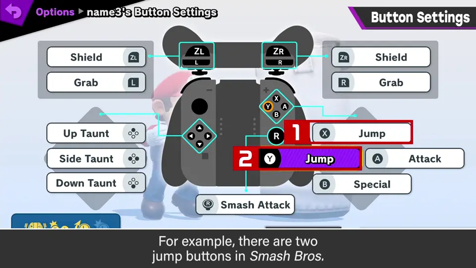
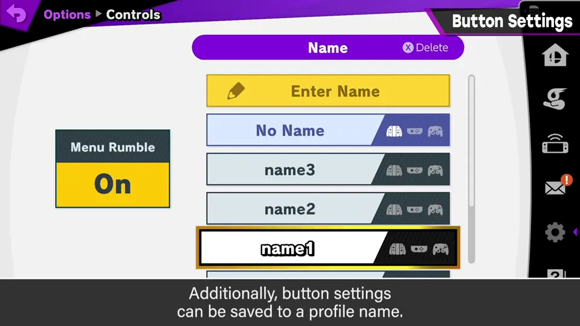
- 按键设置记录在「名字」里：对战时选自己的名字就自动套用，客人多也能应对。
- 可能的话，还能把设置存进手柄，带着走。
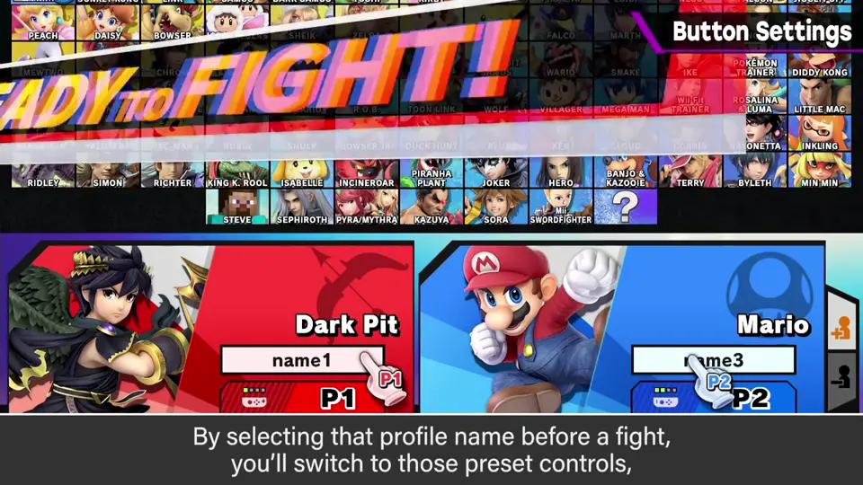
6. 确认键之乱 2:04
日本从 PS5 开始变成 ×确认、○取消；海外本来就是这个标准，以前日本是相反的。
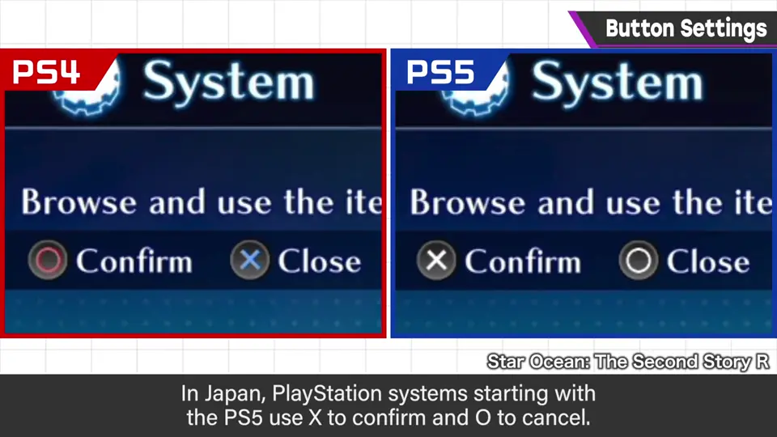
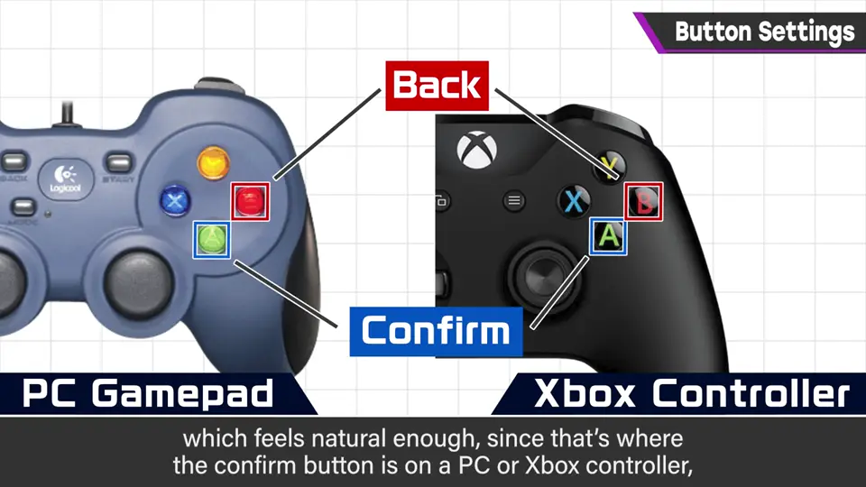
PS4 可以切换为 × 确认，PC 和 Xbox 的位置也一致，结果只有 Switch 变成相反。
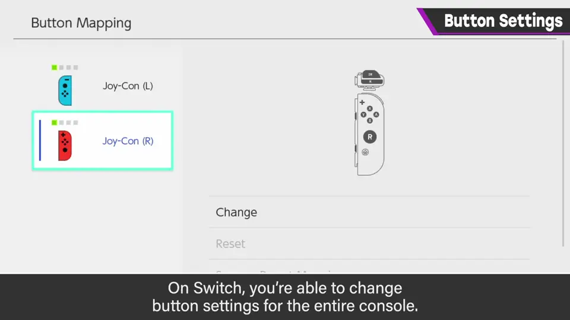
7. 结语 2:58
对制作者来说做按键设置真的很麻烦，但有需要它的玩家。应该尽可能支持。
自测题
1. 为什么樱井不用「直接按下要换的键」的方式？
键位画面也是菜单，需要退出键；按退出键时可能被当作要改键。 1:20
2. 《大乱斗》如何让客人多时也方便？
把按键设置记在名字里，对战时选名字即套用，还可存进手柄带走。 1:48
3. 为什么游戏内仍需要按键设置，即使 Switch 系统能换键？
系统换键会影响所有软件，确认键差异等问题只能靠游戏内设置应对。 2:40